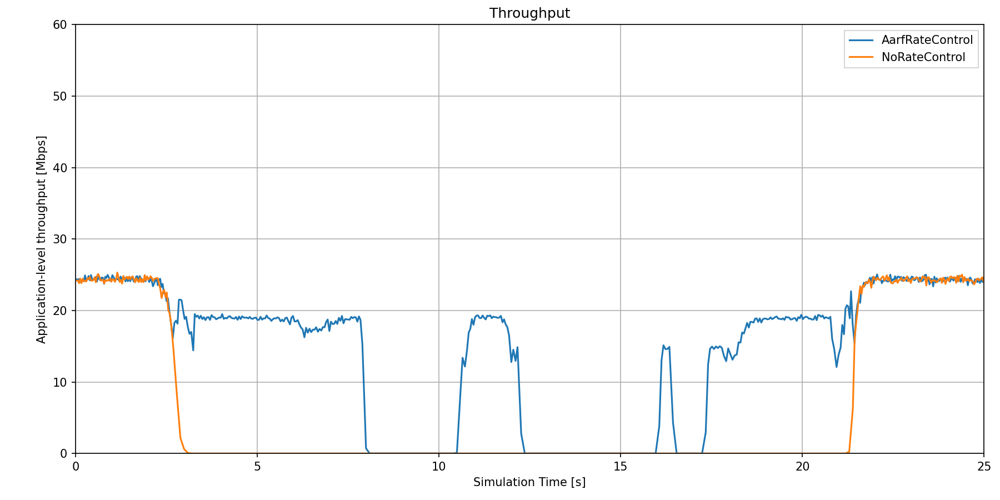

IEEE 802.11 Rate Control¶
Goals¶
IEEE 802.11 contains a mechanism that is able to adapt to various channel conditions, and dynamically choose the optimal bitrate for the current conditions. This mechanism is called rate control, and the INET framework implements several variants. This showcase demonstrates the 802.11 rate control mechanism in INET, and examines how rate control can improve application level throughput.
INET version: 3.6
Source files location: inet/showcases/wireless/ratecontrol
The model¶
Two hosts will move around on the playground, while one of them will send a wireless UDP stream to the other. Sometimes the transmission will be partially blocked by an obstacle, causing packet loss. Scenarios will demonstrate how this affects the throughput when the hosts use rate control and when they don’t.
About rate control¶
The physical layers of IEEE 802.11 devices are capable of transmitting at several different rates. The different rates can use different channel access methods, like orthogonal frequency division multiplexing (OFDM) or directs sequence spread spectrum (DSSS), and different modulation schemes like binary phase shift keying (BPSK) or types of quadrature amplitude modulation (QAM). Each of these have different tolerances of effects like fading, attenuation and interference from other radio sources. In varying channel conditions, using the fastest rate might not be optimal for performance. Rate control algorithms adapt the transmission rate dynamically to the changing channel conditions, so the performance of the radio link can be maximized.
For example, in certain channel conditions if hosts transmitted with 54 Mbps, the transmissions would not be received correctly, and the throughput would drop to zero. However, transmissions with 6 Mbps would be correctly receivable due to the simpler modulation (BPSK instead of 64QAM). It is not obvious which rate works the best with what channel conditions. The goal of rate control algorithms is to find the best rate, and maximize throughput.
Rate control algorithms¶
Some rate control algorithms change the transmission rate according to packet loss. When too many packets are lost (ie. the ACK for them doesn’t arrive) the transmission rate is lowered. When a number of packets are sent without loss, the rate is increased.
INET has different rate control models, such as ArfRateControl,
AarfRateControl and OnoeRateControl.
The network¶
Two StandardHosts (sourceHost and sinkHost) are placed on
the edge of the playground. During the simulation, they will move along
the edge of the playground with different speeds, while sourceHost
will send UDP packets to sinkHost. There is a forest in the middle
of the playground, acting as an obstacle. The line of transmission will
intersect the obstacle at certain times, which will degrade
transmissions.

Configuration¶
Hosts are configured to operate in ad-hoc mode. sourceHost is
configured to saturate the channel with UDP traffic when using the
fastest mode, 54 Mbps. This way the maximum application level throughput
can be measured at every bit rate.
There are two configurations. In one of them, hosts use no rate control
mechanism, and in the other they use Adaptive Auto Rate Fallback
(AARF). Results for the two simulation runs can be compared to show how
the use of rate control affects application level throughput.
Results¶
Below are two animations showing the hosts going around the obstacle. In
the first video, the hosts don’t use rate control, and always transmit
with 54 Mbps. In the second video, hosts use AarfRateControl. The
transmissions intersect the obstacle during the simulation. The path the
transmission takes through the obstacle varies in length as the hosts
are moving. When using rate control, sinkHost manages to receive
more transmission succcessfully when transmissions go through the
forest.
Bitrate and throughput are recorded during the simulations. The following plots show the nominal data bitrate and the actual application level throughput for the two configurations (the values are in s and bps).
{kind=link}
{kind=link}
In the configuration where there is no rate control, the nominal bitrate is constantly 54 Mbps. The throughput is around 24 Mbps when the transmissions are not obstructed by the forest. It decreases to zero when the forest gets between the hosts. In the other configuraton in which the hosts use rate control, the rate control algorithm changes the rate when transmissions go through the obstacle. The rate changes rapidly, which looks like if there were multiple levels on the graph. Some transmissions can still be received correctly even though they go through the forest. The throughput decreases at first, but it’s not zero. There are intervals where it decreases to zero, even though the rate is set to the lowest level (6 Mbps). Throughput and nominal data rate for the two scenarios can be compared on the following plots.
{kind=link}
{kind=link}
The received packet count at sinkHost is 18366 for ‘No rate
control’, and 35966 for ‘AarfRateControl’.
Conclusion¶
This shows that rate control is effective in increasing the performance of the wireless network, as it increases throughput during varying channel conditions. Also, throughput is not zero in situations when it would be, if rate control wasn’t used.
More information can be found in the INET Reference.